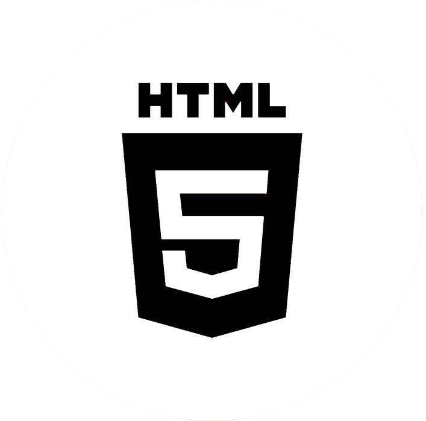
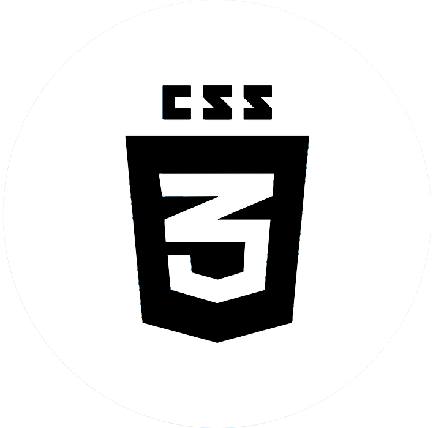
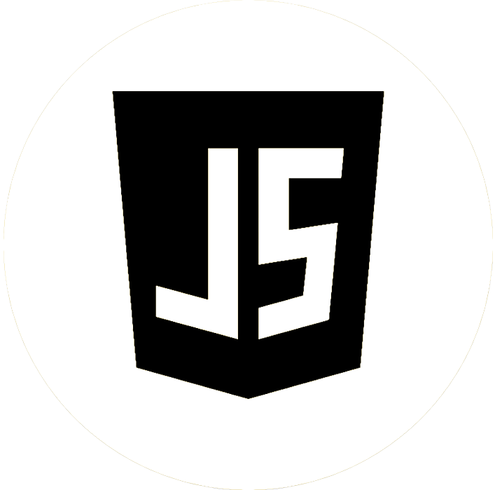
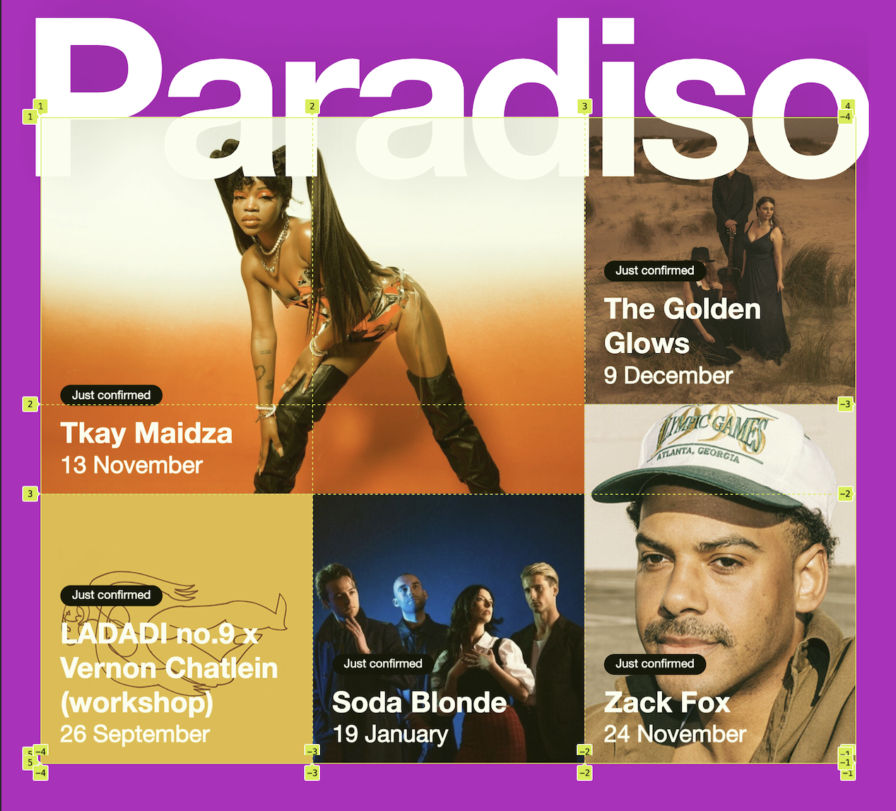

Skills
-
HTML
 -
CSS
 -
Javascript

-
Semantisch
Een van de grootste uitdagingen van de Paradiso website was de diversiteit aan layouts, wat me voor het eerst met een Grid liet werken. Voorheen had ik nog nooit met grids gewerkt, dus dit was een nieuwe ervaring die me veel inzicht heeft gegeven in hoe ik complexe layouts op een efficiënte manier kan opbouwen. Het gebruik van een Grid was heel nuttig voor het creëren van de layout van images en voor de verschillende secties op de pagina's.
-

Grid
Een van de grootste uitdagingen van de Paradiso website was de diversiteit aan layouts, wat me voor het eerst met een Grid liet werken. Voorheen had ik nog nooit met grids gewerkt, dus dit was een nieuwe ervaring die me veel inzicht heeft gegeven in hoe ik complexe layouts op een efficiënte manier kan opbouwen. Het gebruik van een Grid was heel nuttig voor het creëren van de layout van images en voor de verschillende secties op de pagina's.
-
Responsive
Een ander belangrijk aspect van het project was het gebruik van media queries om de website responsive te maken. Dit was ook nieuw voor mij, maar ik realiseerde me al snel hoe essentieel het is om een website goed te laten functioneren op verschillende schermformaten. Ik ben begonnen met de mobiele versie van de site, omdat ik zo meteen een goede basis kon leggen. Daarna heb ik de website stap voor stap aangepast, zodat hij ook op grotere schermen goed werkt.
-

-
Hamburgermenu
Ook heb ik voor het eerst een hamburgermenu gemaakt aan de hand van HTML en Javascript. Dit was een nieuw voor mij en daardoor een uitdaging om dit op de juiste manier te coderen.
Bekijk het de website hier